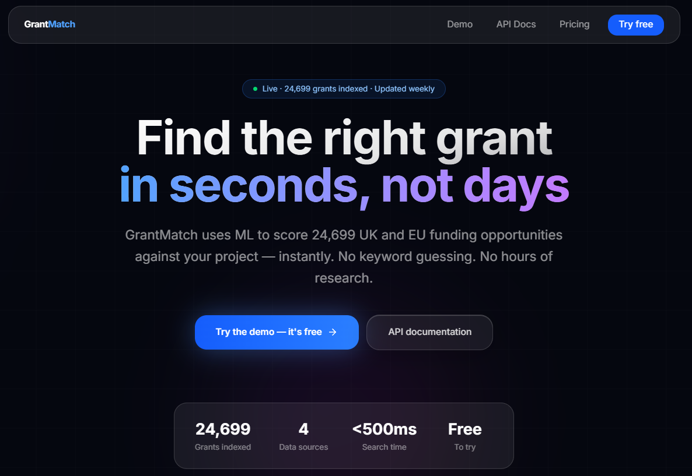
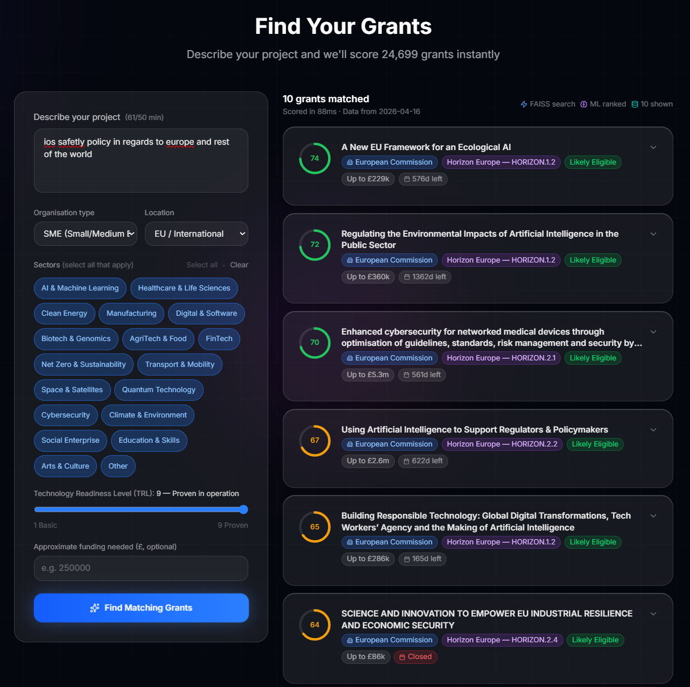
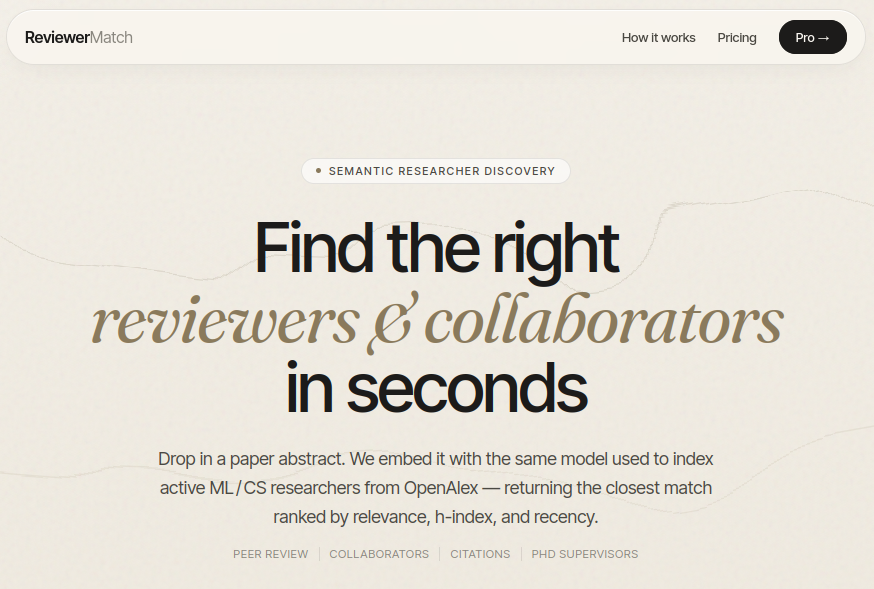
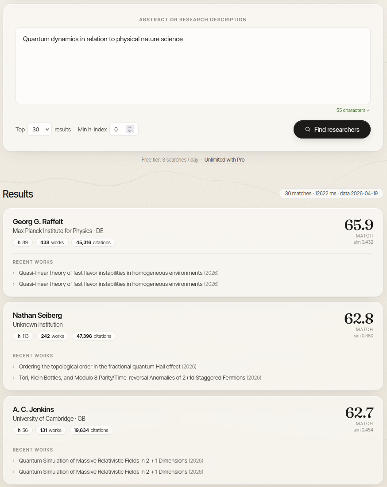

Samiur Rahman Khan
I build production machine learning systems from research paper to live deployment. Currently shipping two ML products in production semantic retrieval systems for researchers and research funding while pushing rigorous benchmarks on energy-efficient neural networks. I work across the full ML stack: PyTorch for modelling, FastAPI and Postgres for serving, and Vercel and Railway for shipping.
Production ML systems
Two end-to-end ML products I designed, built, and deployed solo: model, infrastructure, frontend, and ops. Both are live and accepting traffic.
GrantMatch Live


A neural information retrieval system for UK and EU research funding. Indexes 24,699 live grants from UKRI, Innovate UK, GOV.UK, and European Commission CORDIS into a 384-dimensional semantic space. Ranks by semantic match plus filters for TRL, sector, funding amount, and organisation type. Full-stack: API, typed frontend, edge proxying, and API-key authentication.
Try the demo →ReviewerMatch Live


Semantic researcher discovery. Takes a paper abstract and returns a ranked shortlist of active ML and CS researchers from OpenAlex, reranked by similarity, h-index, and recency. All ML inference happens offline on Colab; the production service only rebuilds the FAISS index from pre-computed embedding bytes in Postgres, keeping the free tier well within memory limits. Demonstrates practical deployment tradeoffs for ML systems on constrained infrastructure.
Try the demo →SNN Anomaly Detection Benchmark Suite
Rigorous benchmark suite for spiking neural networks on anomaly detection. Five-seed evaluation across four datasets (NSL-KDD, UNSW-NB15, thyroid, cardiotocography). Results: F1 within 1.3% of ANN baselines at 35 to 87x lower theoretical energy on neuromorphic hardware. Paper submitted to ICONS 2026.
Human Gait Analysis
Biomedical ML pipeline on real pressure and temperature data from 312 patients, identifying gait abnormalities across four metatarsal regions. 22% detection accuracy for patients requiring medical attention, against a 10% baseline. Awarded Top 5 MSc Data Science thesis at Middlesex University, 2025, graded Distinction.
LLM Quantisation-Aware Knowledge Distillation
Joint QA-KD retained higher reasoning accuracy at 4-bit precision than sequential compression, with 1.67% gains on out-of-distribution benchmarks (HellaSwag, ARC, WinoGrande). Practical study of compression-accuracy tradeoffs for LLM deployment.
Where I have worked
- Shipped two full-stack ML products to production (GrantMatch, ReviewerMatch) handling semantic search across 24,699 grants and tens of thousands of researchers.
- Benchmarked SNN architectures against ANN baselines, matching F1 within 1.3% at 35 to 87x lower theoretical energy on neuromorphic targets.
- Ran rigorous multi-seed evaluation across four datasets with a Pareto-optimal methodology for timestep selection — submitted to ICONS 2026.
- Built the LLM compression pipeline for QA-KD research, achieving 1.67% out-of-distribution reasoning gains over sequential compression.
- Delivered undergraduate modules in discrete mathematics, computer networks, and Cisco-certified courses to cohorts of 60 plus students.
- Designed and launched a new PGD curriculum covering ICT, data science, and cybersecurity, adopted as a core departmental offering.
- Supervised 8 final-year research theses, with 2 students progressing to publication.
- Led data-driven marketing analytics across five enterprise clients using HubSpot, Google Analytics, and Tableau, informing Web3 go-to-market strategy.
- Conducted Python and SQL market research, reducing requirement-gathering cycles by approximately 30%.
- Translated technical blockchain architecture into commercial requirements documents for non-technical stakeholders.
What I build with
Academic background
Distinction. Top 5 MSc thesis across the cohort.
Summa Cum Laude, CGPA 3.98 / 4.00.
Best BSc Thesis Award, ICCA conference, ACM publications.
Published work
I keep a research publication record alongside engineering work. Full research profile and PhD application materials live on the research page. Summary: 27 Google Scholar citations, h-index 2, one paper under review at ICONS 2026.
Let's talk
I am open to ML engineering, applied research, and data science roles in the UK and Europe. If you are hiring for a team that works on efficient ML, retrieval systems, or ML infrastructure, I would very much like to hear from you.
The fastest way to reach me is email. Code samples, references, and additional portfolio work are available on request.